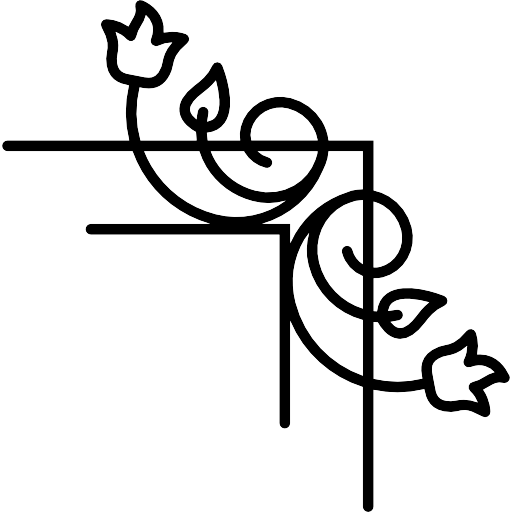
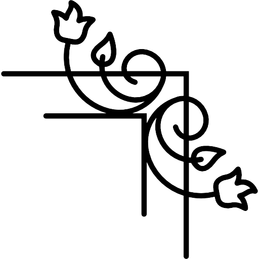

astropoetry

astropoetry

The Notebook of Dorothy N. Davis
I found the woman/astronomer/poet in the notebook of Dorothy N. Davis, in the Hunt Building basement in Carnegie Observatories, Pasadena. The sunny, afternoon blaze of Southern California radiated through the hopper windows that summer, as I was testing dark matter models with simulations. I was burnt out, code glowing on my laptop screen, my mind lit by the invisible matter of the Universe. Vera C. Rubin famously confirmed the existence of dark matter using galaxy rotation curves here, in the Observatories, fifty years ago.
But I had never known Dorothy N. Davis before this. Her notebook sat flat in a bookshelf, next to a stack of pamphlets about the Life and Work of George Ellery Hale. The date on the front read 1939, decades before Rubin was here. It was an old composition notebook. Thick, like a commonplace journal stuffed with curious articles and sidewalk roses. The pages were browned, as if by the heat. It was not just the binding that was full—the wide rules and margins were bursting with her elongated cursive, too.
I did some surface-level Googling—Dorothy was an American astronomer. She graduated high school when she was just fifteen, relied on scholarships and part-time jobs to go to the University of California when her father was hit by the Great Depression, and claimed her Ph.D. ten years later. I remember that she spent her Christmas break working on her thesis at Mount Hamilton, reading in the library, waiting for a clear night. In my head, I imagine she was very tall.
I wished it were all mine; I do not believe I had what Dorothy had. In many ways, I have more: an education that was given to me, financial security, parents who, I am worried, will never put themselves before my studies. But—the drive to seek out the stars, that thirst for learning that was mine when I started as an undergraduate. Was I not a young, aspiring female astronomer like Dorothy was, at the time she was using this notebook? The sleepless girl who would make sacrifices to sit underneath a dark telescope dome was somewhere in me. But that summer, I was burnt out and I wanted to lie in the sun.
I did find Dorothy’s love for art and literature in me, though. In all her strive for education and shedding light on the Universe, I learned from the notebook that Dorothy was taking a course on Science and Imagination at Smith College while attending the Harvard Summer Colloquia in Astronomy. On one page, there were bullet points on What Happened to Prose Style? and another on the Anomalous Behavior of 3886 – 3930 Fe Multiplets. It was a curious combination, but it made sense. What I remember most about the notebook is that, on the inside front cover, Dorothy taped a 1938 newspaper clipping from The United Press:
Spenser’s Tomb Opened in Vain:
On Shakespeare-Bacon Riddle
The Baconian Society tried to prove that the father of the scientific method, Francis Bacon, wrote Shakespeare’s plays by digging up Edmund Spenser’s tomb—and clearly it was in vain. I wonder why Dorothy took this clipping, and what about the conspiracy theory caught her focus. These old men were looking beneath the earth for answers; she was looking up, past our planet. They had a shovel; she had a telescope. Perhaps she imagined she was like the secret society, sitting alone in the observatory or library, where it was just her and the stars. Or it might have been the way the Baconians searched for truth: based on the stories of their fathers, fixated on an idea of the past. Dorothy was studying a science passed onto her from a male-dominated academia; but it was still the very matter of the Universe, which existed since the beginning of time. I think it was the mysticism of discovery that struck her.
Dorothy left her job in Princeton when her mother broke her ankle to teach high school physics, until she was urged to return to her research. She collaborated on a rocket project at Caltech during the war, measured stellar spectra at Mt. Wilson Observatory, and started work at the Jet Propulsion Laboratory. She married and had two daughters and a son.
I wonder where I will go? If I will achieve as much as Dorothy did.